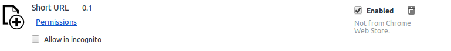
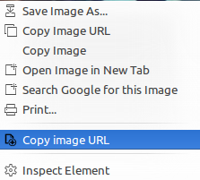
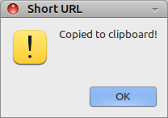

HOME

Install
To install Google chrome app, first download the app from here, then follow the following steps:
- manually download the file (right click → Save As…)
- open the Extensions page in Chrome
- drag the downloaded .crx file into the Extensions page
Source
How it works
- First make sure that the app is installed as it should appear like the following in the extension page

-
You can shorten the url of a linke or an image, to shorten the link for a link right click on the link -> choose "Copy link address"
as shown below.

-
To shorten a url for an image, right click on the link -> choose "Copy image URL", as shown below.

-
The app will display a confirmation message meaning the shorten URL is now copied to your clipboard. Have Fun!
